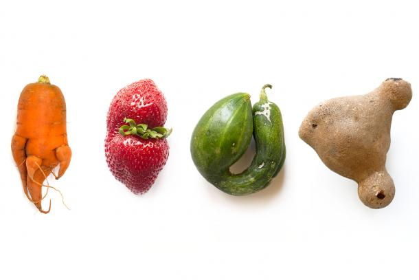
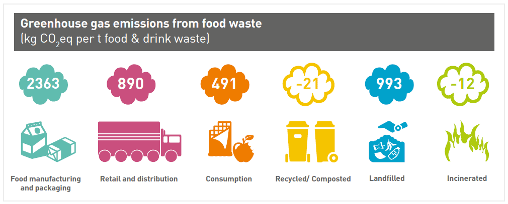

Facts and Statistics
Facts and Statistics
- 226.7 million people currently suffer from hunger in Africa.
- 14.5 million people suffer from hunger in Kenya.
- Every year about a third of the planet’s food goes to waste.
- Around 95 kg -110kg of food is wasted per consumer annually in North America and Europe and around 6kg-11kg in Sub-Saharan Africa and South and Southeast Asia, per consumer.
- Food waste alone causes 10% of greenhouse gases in our world today.
- Food that does not meet certain quality control standards are immediately discarded, one the quality tests includes the shape and colour of the food, regardless if it is fit to consume food that is considered to be "Ugly" will automatically be discarded.
- This has caused over six billion pounds of ugly produce to go unharvested or unsold, annually, in the United States of America, alone.
- If you take food waste our world currently produces and turn it into a country, it will be the third-largest country in the production of greenhouse gas emissions.


